Assistants API
Assistants API 快速入门
Chat Completions API
给定一个包含对话的消息列表，返回模型生成的消息作为输出。尽管聊天格式旨在使多轮对话变得简单，但它同样适用于没有任何对话的单轮任务。
Assistants 是什么？
助手（Assistants） API 支持你在自己的应用程序中构建人工智能助手。一个助手有其专用的指令，并可以利用模型、工具和知识来回应用户查询。助手API 目前支持三种类型的工具：代码解释器、检索和函数调用。
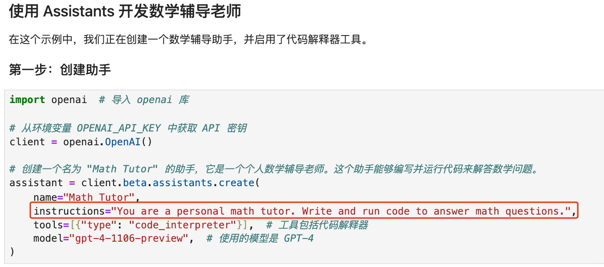
Assistants 设计模式
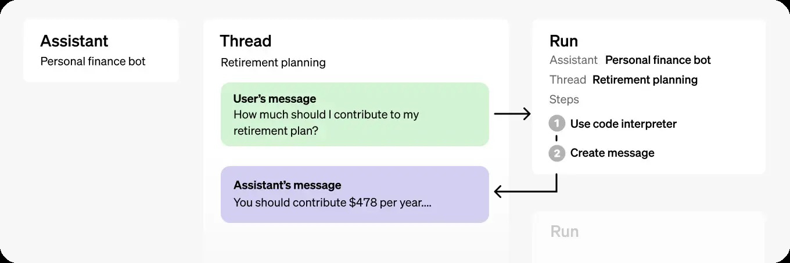
Assistants 关键对象说明
| OBJECT | WHAT IT REPRESENTS |
|---|---|
| Assistant | 专为特定目的构建的人工智能，使用OpenAI 的模型并调用工具 |
| Thread | 助手与用户之间的对话会话。线程存储消息，并自动处理截断，以将内容适应模型的上下文。 |
| Message | 由助手或用户创建的消息。消息可以包括文本、图片和其他文件。消息以列表形式存储在线程上。 |
| Run | 在线程上对一个助手的调用。助手利用其配置和线程的消息执行任务，通过调用模型和工具。作为运行的一部分，助手会将消息追加到线程中。 |
| Run Step | 助手在运行中采取的详细步骤列表。助手可以在其运行期间调用工具或创建消息。检查运行步骤可以让您深入了解助手如何得出最终结果。 |
Assistants Run 指令覆写
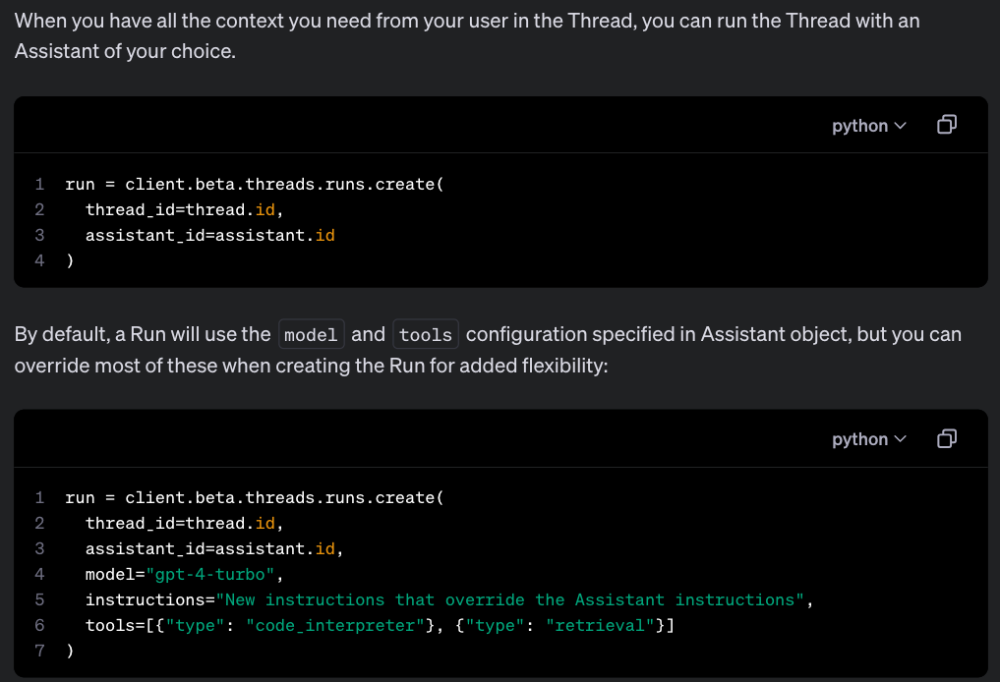
Assistants Run 生命周期管理
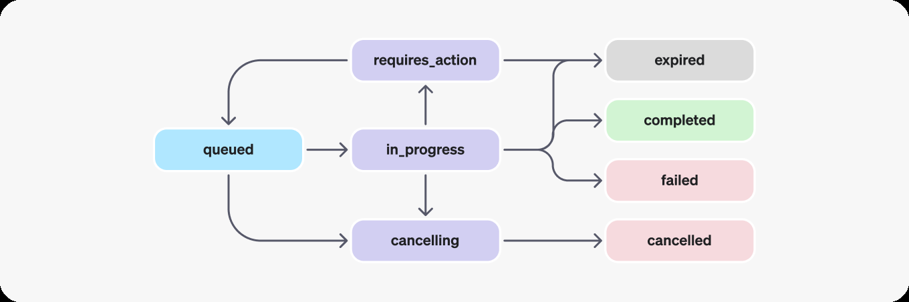
Assistants Run 状态说明
| STATUS | DEFINITION |
|---|---|
| queued | 当运行刚被创建或者完成所需的操作后，它们会被移动到队列状态。它们应该几乎立即转移到进行中状态。 |
| in_progress | 进行中状态下，助手使用模型和工具执行步骤。您可以通过检查运行步骤来查看运行的进展情况。 |
| completed | 运行成功完成！现在您可以查看助手添加到线程中的所有消息，以及运行采取的所有步骤。您也可以通过向线程添加更多用户消息并创建另一个运行来继续对话。 |
| requires_action | 当使用函数调用工具时，一旦模型确定要调用的函数的名称和参数，运行将移动到需要操作的状态。然后您必须运行这些函数并提交输出，运行才能继续。如果在过期时间戳（大约创建后10分钟）过去之前未提供输出，运行将移动到过期状态。 |
| expired | 当函数调用的输出在过期时间之前没有提交，运行将过期。此外，如果运行执行时间过长，超过了过期时间所述的时间，我们的系统将使运行过期。 |
| cancelling | 您可以尝试使用取消运行端点取消正在进行中的运行。一旦取消尝试成功，运行的状态将移动到已取消。取消是尝试过的，但不保证成功。 |
| cancelled | 运行已成功取消。 |
| failed | 您可以通过查看运行中的last_error 对象来查看失败的原因。失败的时间戳将被记录在failed_at 下。 |
Assistants API vs GPT API vs LangChain
| 维度 | GPT API | Assistants API | LangChain |
|---|---|---|---|
| 功能 | 文本生成、问答、文本摘要等 | 文本生成、问答、文本摘要、代码执行、浏览网页等 | 文本生成、问答、文本摘要、代码执行、链式操作等 |
| 设计用途 | 简单的文本交互 | 复杂的交互和长时间会话 | 构建复杂、可扩展的语言助手 |
| 状态管理 | 无内建状态管理；需要用户自行处理 | 内建状态管理，支持长时间对话 | 支持状态管理和多轮对话 |
| 附加工具 | 无 | 包含多种工具，如代码执行器、浏览器等 | 支持插件和工具链，可以与外部API等交互 |
| 交互复杂度 | 适用于单次请求-响应模式 | 支持复杂的交互逻辑和多轮对话 | 支持高度可定制的多轮对话和任务链 |
| 会话上下文 | 用户需要自行管理上下文 | 自动管理和维护对话上下文 | 提供工具和框架来管理上下文和会话历史 |
| 适用场景 | 快速文本处理和生成 | 构建交互式助手、管理复杂任务等 | 开发复杂的语言处理应用，集成多种数据源和功能 |
| 开发维度 | 相对较低 | 相对较高，需要处理更多的交互和状态 | 适用于有经验的开发者，提供高度自由度和扩展性 |
Assistants 工具介绍与使用
代码解释器：Code Interpreter
代码解释器允许助手API 在一个沙箱执行环境中编写和运行Python 代码。这个工具可以处理具有多样数据和格式的文件，并生成包含数据和图形图像的文件。代码解释器使您的助手能够迭代运行代码，解决复杂的编码和数学问题。当您的助手编写的代码无法运行时，它可以通过尝试运行不同的代码来迭代这些代码，直到代码执行成功。
代码解释器的收费标准为每个会话0.03 美元。如果您的助手在两个不同的线程中同时调用代码解释器（例如，每个终端用户一个线程），则会创建两个代码解释器会话。每个会话默认活跃一小时，这意味着如果用户在同一线程中与代码解释器交互一小时以内，只需为一个会话付费。
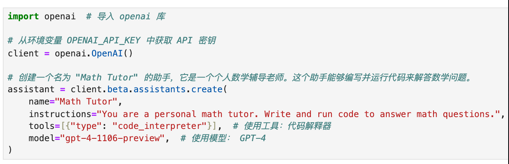
信息检索：Knowledge Retrieval
检索功能通过从模型外部引入知识来增强助手的能力，例如来自您的专有产品信息或用户提供的文件。一旦文件被上传并传递给助手，OpenAI 将自动对您的文件进行分块处理，索引并存储嵌入，并实施向量搜索以检索相关内容以回答用户查询。
检索的价格为每助手每天$0.20/GB。当启用检索工具时，将同一个文件ID 附加到多个助手将会产生每助手每天的费用。例如，如果您将同一个1GB的文件附加到两个启用了检索工具的不同助手（例如，面向客户的助手#1 和内部员工助手#2），您将为这个存储费用支付两次（每天2 * 0.20 美元）。这个费用不随给定助手检索知识的终端用户数量和线程数量而变化。
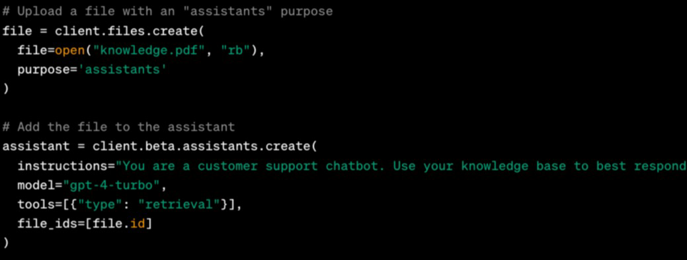
Assistants 支持文件类型
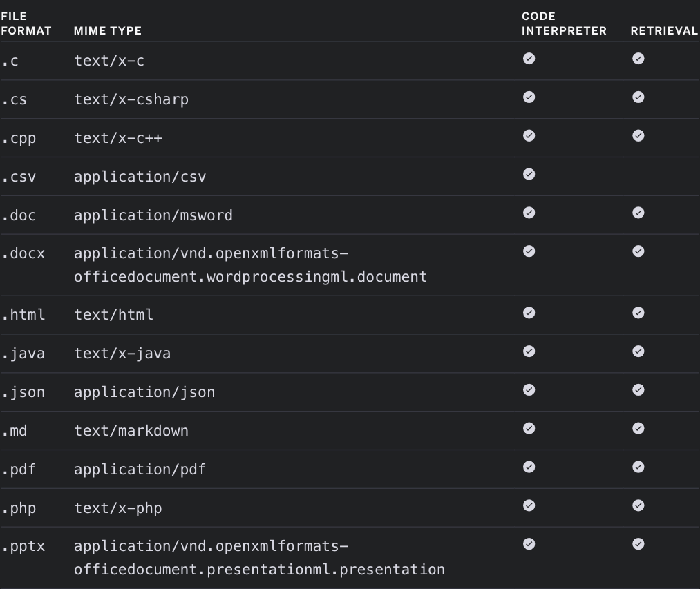
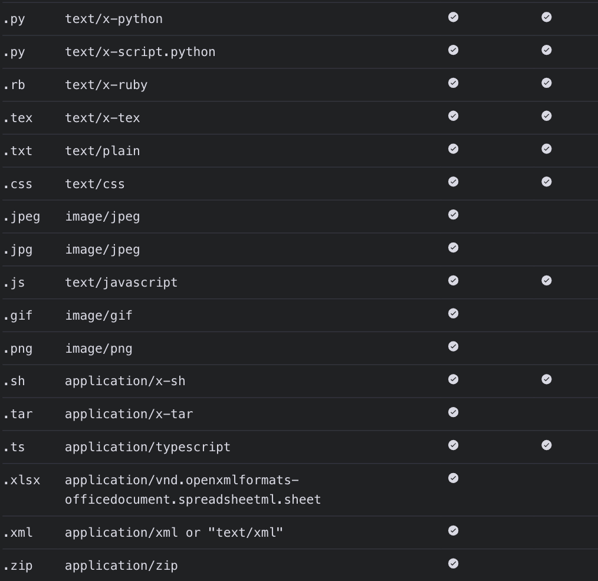
OpenAI 文件存储
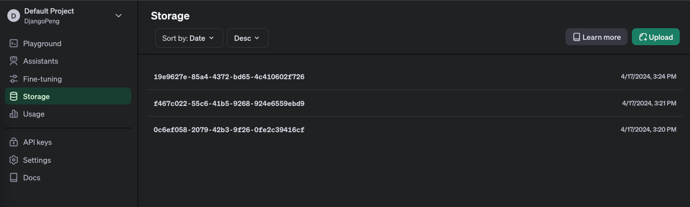
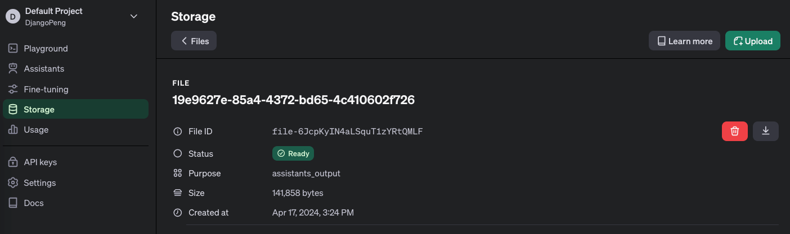
函数调用：Function Calling
类似Chat Completions API，助手API 也支持函数调用功能。
函数调用允许用户向助手描述函数，并让其智能地返回需要调用的函数及其参数。
当助手API 在运行中调用函数时，会暂停执行，您可以提供函数调用的结果以继续运行执行。
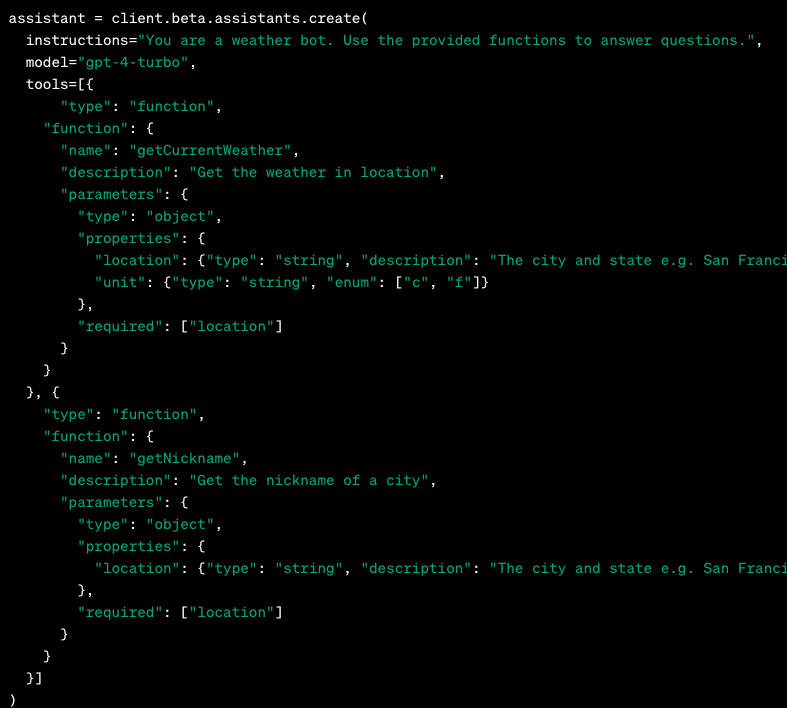
Assistants 开发实战
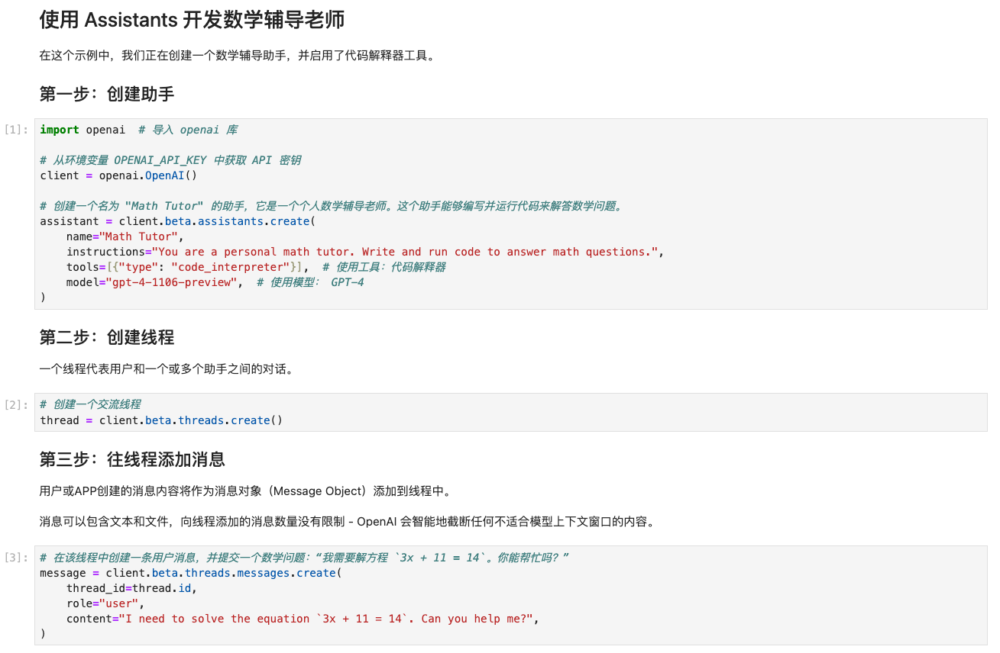
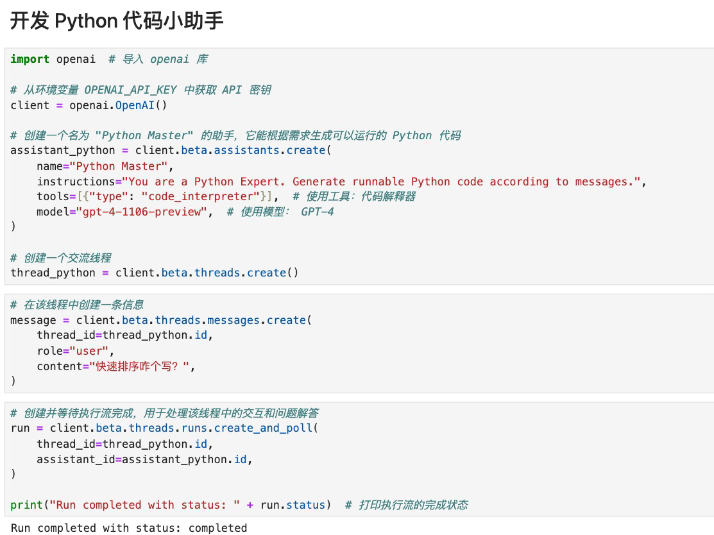
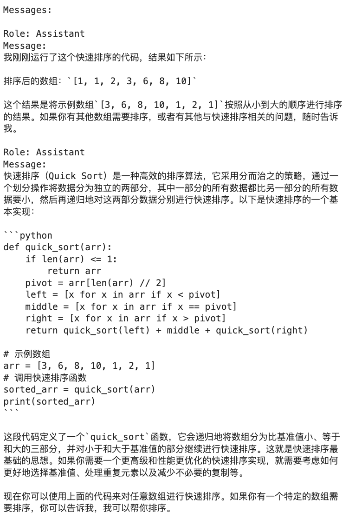